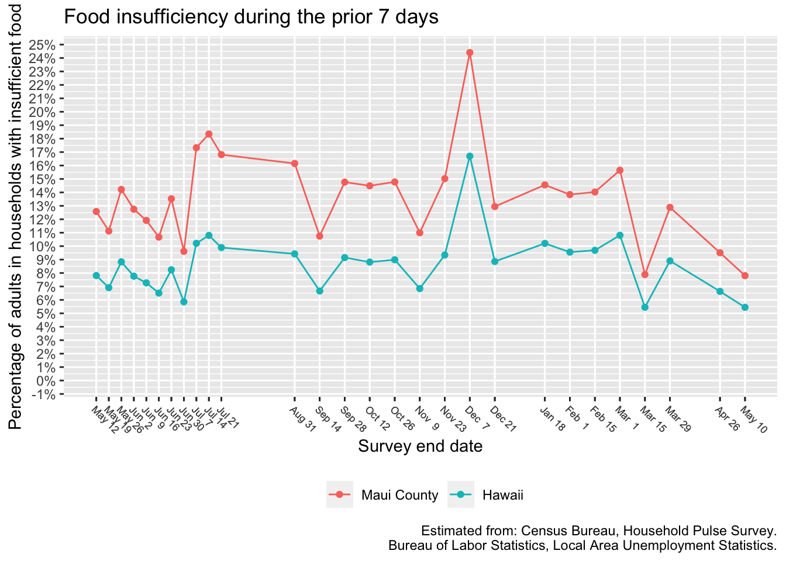
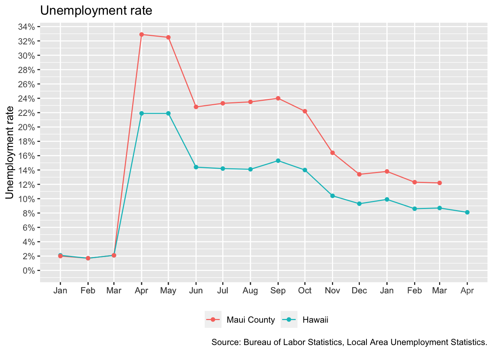

Food insufficiency

In the most recent survey period that ended March 1, an estimated 15.7% of Maui County adults, or approximately 18,600 adults, lived in households experiencing food insufficiency.
Using a model based upon data from the Food Security Supplement of the Current Population Survey, we estimate that in the most recent survey period, 12.7% of children, or approximately 4,690 children, experienced food insufficiency.
Because the Household Pulse Survey does not provide data at the county level, we use a model to estimate county-level food insufficiency. The model uses the food insufficiency rate of Hawaii and the county unemployment rates to estimate food insufficiency for each county. The state-level food insufficiency data is updated more frequently than the county unemployment rates, and each month’s unemployment data comes out later than the food insufficiency data. If unemployment data is not yet available for a month, the model uses the latest month for which data is available. We revise the county-level estimates for such months as new unemployment data becomes available.
Unemployment

The data for the most recent month is typically “preliminary” and subject to revision when the following month’s data is released.